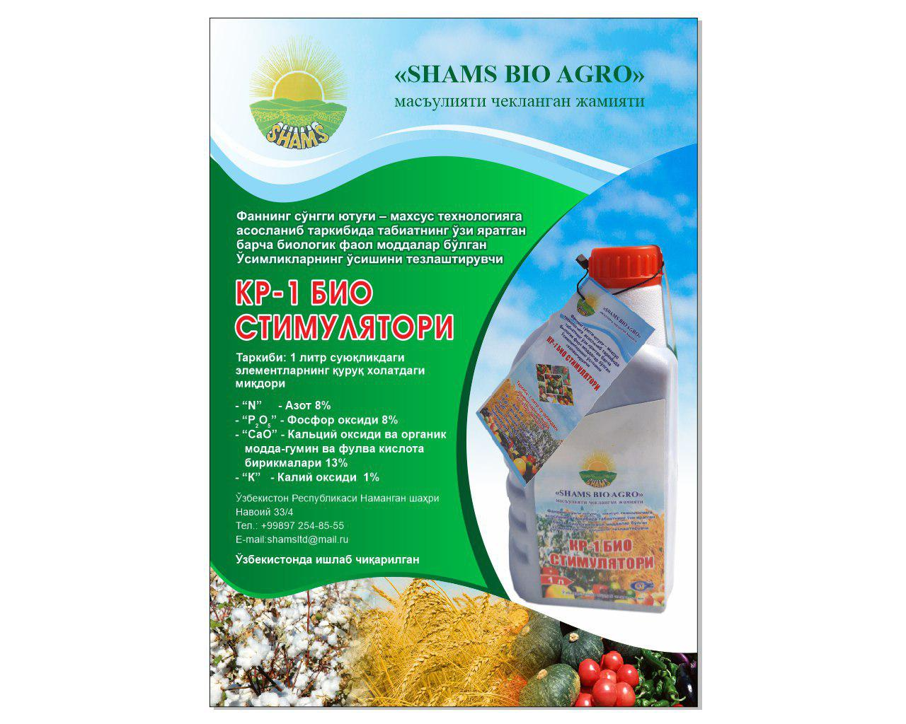

Shams Bio Agro

| N |
Nitrogen |
8% |
| P2O5 |
Phosphorus oxide |
8% |
| K |
Phosphorus oxide |
8% |
| CaO |
Calcium oxide and organic compounds - gumin and fulvaic acid compounds |
13% |
| B |
Chalk |
1% |
| Fe |
Iron |
0.05% |
| Mn |
Manganese |
0.003% |
| Zn |
Zinc |
0.003% |
| Mo |
Molybdenum |
0.001% |
| Mg |
Magnesium |
0.003% |
| 1 |
Accelerates plant growth |
| 2 |
Protects plants from stress |
| 3 |
The stimulator is sticky against plants |
| 4 |
Improves photosynthesis of plants and improves immunity |
| 5 |
Increases resistance to cold weather |
| 6 |
Increases plant resistance to hot weather and dehydration |
| 7 |
Increases plant resistance to disease |
| 8 |
Activates the soil beneath the plant |
How to use in the cultivation of cotton and wheat
Stir a 0.5 liter stimulant in 40-50 liters of clear water and strain 1 ton of seeds. In the phase of cotton seeding and wheat germination, 1 liter of stimulant is mixed with 300 liters of clear water and sprayed on 1 ha of cultivation area.
Section Two
The world is the planet Earth and all life on it, including human civilization.[1] In a philosophical context, the "world" is the whole of the physical Universe, or an ontological world (the "world" of an individual). In a theological context, the world is the material or the profane sphere, as opposed to the celestial, spiritual, transcendent or sacred spheres. "End of the world" scenarios refer to the end of human history, often in religious contexts.
Section Three
The world is the planet Earth and all life on it, including human civilization.[1] In a philosophical context, the "world" is the whole of the physical Universe, or an ontological world (the "world" of an individual). In a theological context, the world is the material or the profane sphere, as opposed to the celestial, spiritual, transcendent or sacred spheres. "End of the world" scenarios refer to the end of human history, often in religious contexts.